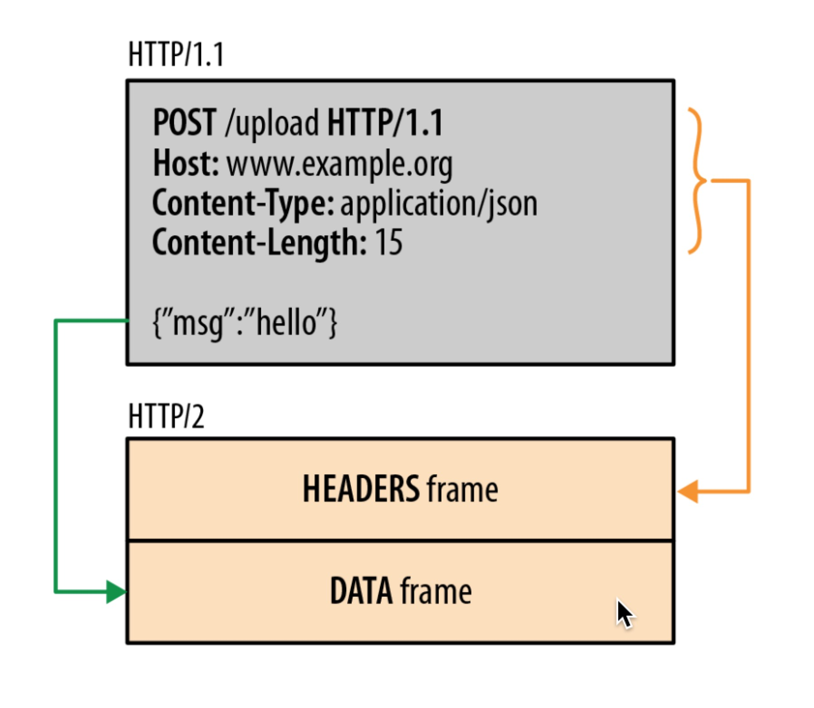
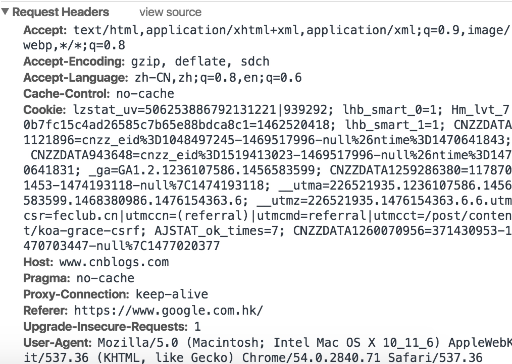
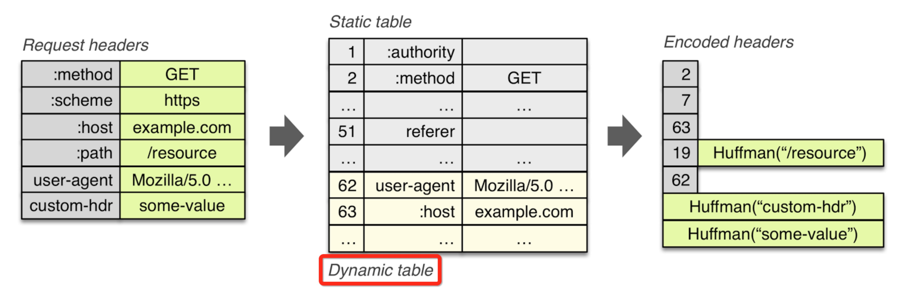
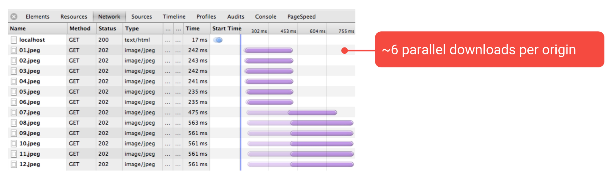
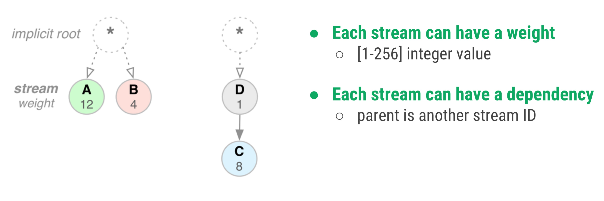
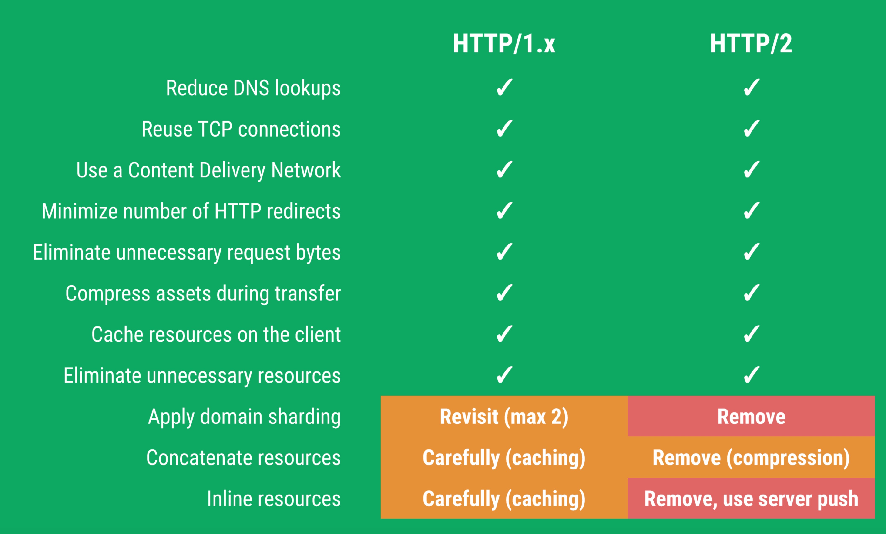

http2特性简介
http2现在越来越普及了，加上现在的ng都可以自动做降级处理，所以http2的实装也变得越来越轻松便捷了。
http2脱胎于google的spdy v2版本，用于替换老旧的http1.x，那么http2给我们带来了什么好处呢？现在对http2的几个特性做一些总结：
1、二进制分帧
和http1.x的包传输不同，http2采用了二进制数据流来作为数据传输的载体，通过将原来传输的包拆解为小单位的帧（frame，http2数据的最小单位），通过连接（Tcp连接）,发送消息（message，由多个帧组成）。消息可以是乱序的，数据接收方会根据帧首部的流标识符对数据进行重新组装，以保持数据的正确性。分帧示例如下图

二进制分帧是http2的基石，后续的多路复用等性能优化都是建立在二进制分帧的基础上的。
2、头部压缩
由于http1.x的头部字段复杂，而且每次都会请求，都会将全量的头部进行上传，显著的增加了网络开销。

这是一个典型的http1.1头部，可以看到作为文本数据传输的还是略显庞大的。而对于当使用http2协议时，协议采用首部表(此表将在连接生命周期内由客户端和服务器端共同维护)来进行首部字段存储，只有当首部表中的数据新增（变更）或者未发送过时，才会发送http头部字段，具体示例可见下图。

ps：大家注意，上图中的首部表分为静态表（static table：包含常用字段）和动态表（Dynamic table：包含自定义字段等非常用字段）。当新增或者改变字段时，会增加或修改动态表中的数据。
3、多路复用
对于http1.x来说，每次加载页面会发起一排请求，而由于浏览器的限制，每个域名同时的并发请求被限制到了6~8个不等。由此诞生了前端很多的优化方式，比如：雪碧图，合并js/css，域名拆分等各种方法。

这种限制会造成很多问题：
a）频繁建立tcp连接，资源消耗较大
b）cpu和内存使用率高
c）不断发送无法精简的首部
d）优化造成的代码复杂度提升
而对于http2协议，将对同一域名建立一条双向的数据流通道，通道将发送各类帧数据，帧数据可以是乱序的。这也是服务端推送的基础。
4、服务端推送
采用http2协议时，服务端可以向客户端进行一些数据推送，推送受到同源限制。
服务端推送我们可以收获以下特性：
a）根据收到的index.html建立依赖关系，再次请求时对其依赖进行推送。
b）当页面离线后，对页面进行推送，并使客户端对资源进行缓存，以达到快速打开的目的。
5、流优先级
在http1.x时代，有时需要对一些比较重要图片做优先，希望图片尽量快速的展示给用户，有时需要对一些不需要展示的图片进行延迟加载。
http2将会根据请求的type/content进行优先级判断，即可以发现同时加载，也可以延迟加载。具体实现可以参看下图：

可以看到
a）每个流都会带有一个id
b）流可以有依赖
c）流可以设置权重，其中权重数值越小优先级越高，比如图中的资源‘d’就将会被提前于资源‘c’节点进行下发。
6、协议协商
协议协商主要是指http2对http1.x的协议的升级和降级，具体的内容会根据服务器端配置来进行，简而言之，就是如果服务器端支持，客户端和服务器端会同时升级http1.x到http2，并采用http2作为通信协议，如不支持，将继续使用http1.x作为通信协议。
总结
最后给一张对比图，以清晰的阐述http1.x和http2的不同：

总之，了解了http2的特性以后，前端的一些优化思路可能需要改变，比如多路复用性能使图片压缩等方式变得鸡肋了。所以具体的方案还是需要继续探索。